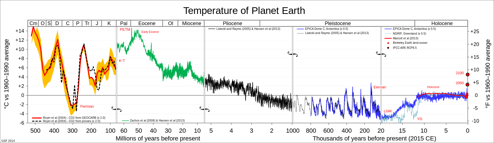

SI !L'humain est à l'origine du changement climatique, surtout à cause de ses émissions de gaz à effet de serres.
ALORS, effectivement, 3% des articles scientifiques parlant du changement climatique disent qu'ils n'existe pas, qu'il ne fait pas de mal ou qu'il n'est pas dû aux actions de l'humain. Outre leur nombre faible, plusieurs scientifiques ont cherché à étudier ces articles et ont systématiquement trouvé une erreur de raisonnement.
OUI MAIS jamais aussi vite. Comme on le voit sur le graphique ci-après, la température de la Terre a bien
évolué mais cette évolution se faisait sur plusieurs milliers voire plusieurs millions d'années. A la fin, on
remarque que l'augmentation est forte alors que nous étions dans une période où c'était stable.

SI, ça arrive bien trop vite !
Le Méthane est sous-estimé mais participe grandement au réchauffement climatique. Il est principalement émis par l'agriculture et la production des hydrocarbures. Bien que sa durée de vie dans l'atmosphère soit plus faible, le GIEC estime son pouvoir contributeur entre 86 et 90 fois supérieur sur 20 ans.
SI MAIS le GIEC craint leurs effets secondaires dans sur la disponibilité et la qualité de l'eau, sur la production alimentaire et sur la biodiversité.
SI ! C'est un effort collectif. Nous vous conseillons de faire le test pour connaître votre emprunte carbone. Il sensibilise sur ce qui impacte le plus.
D'autres font l'effort, même si on n'est toujours pas assez nombreux. De plus, tout le monde ne peut pas faire les mêmes efforts, par manque d'argent en général. L'Etat et les sociétés privés doivent aussi faire leur part !
Attention ! Pas n'importe quel plante n'importe où, planter des fleurs exotiques, ça pollue aussi.